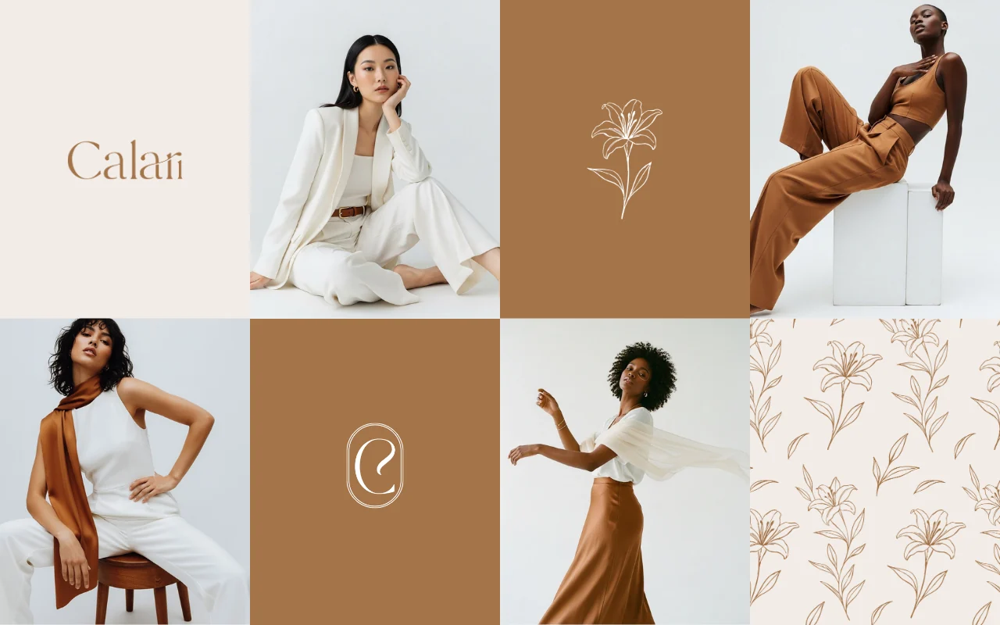
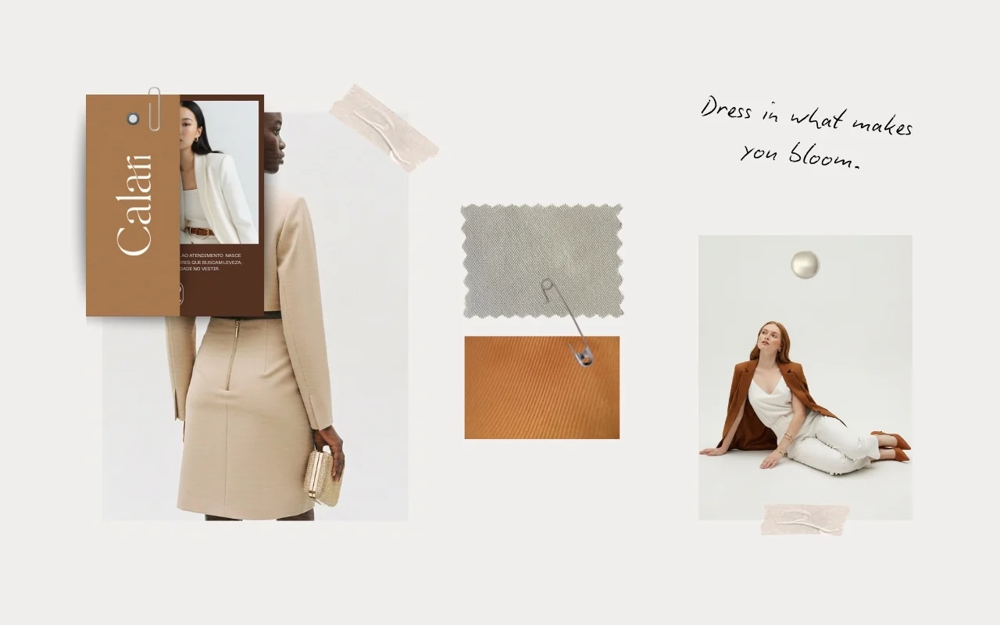
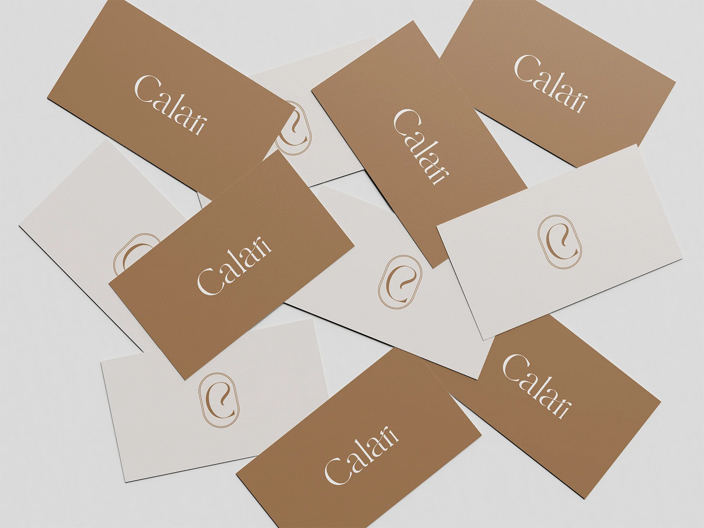
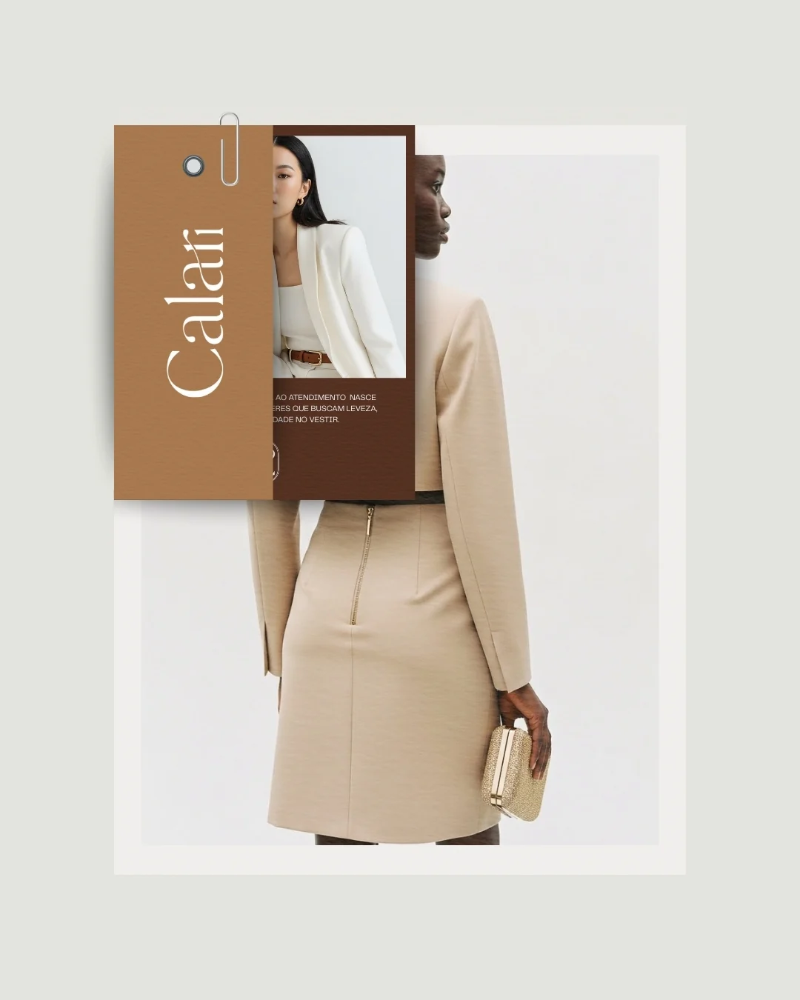
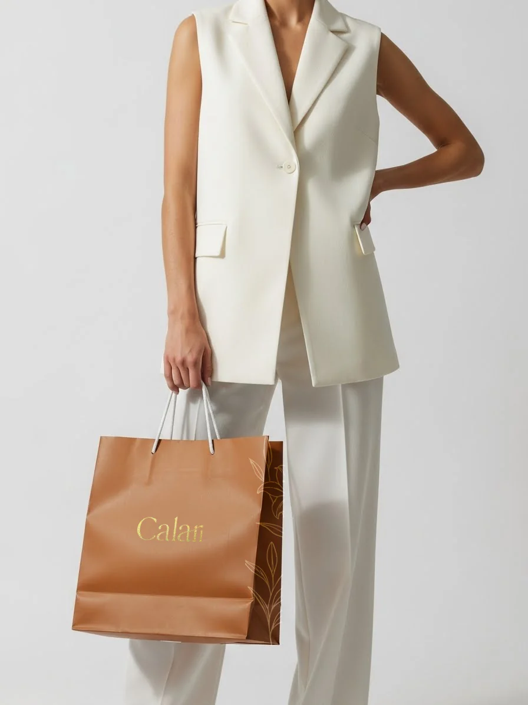
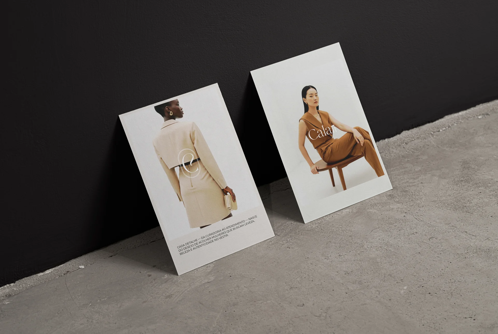
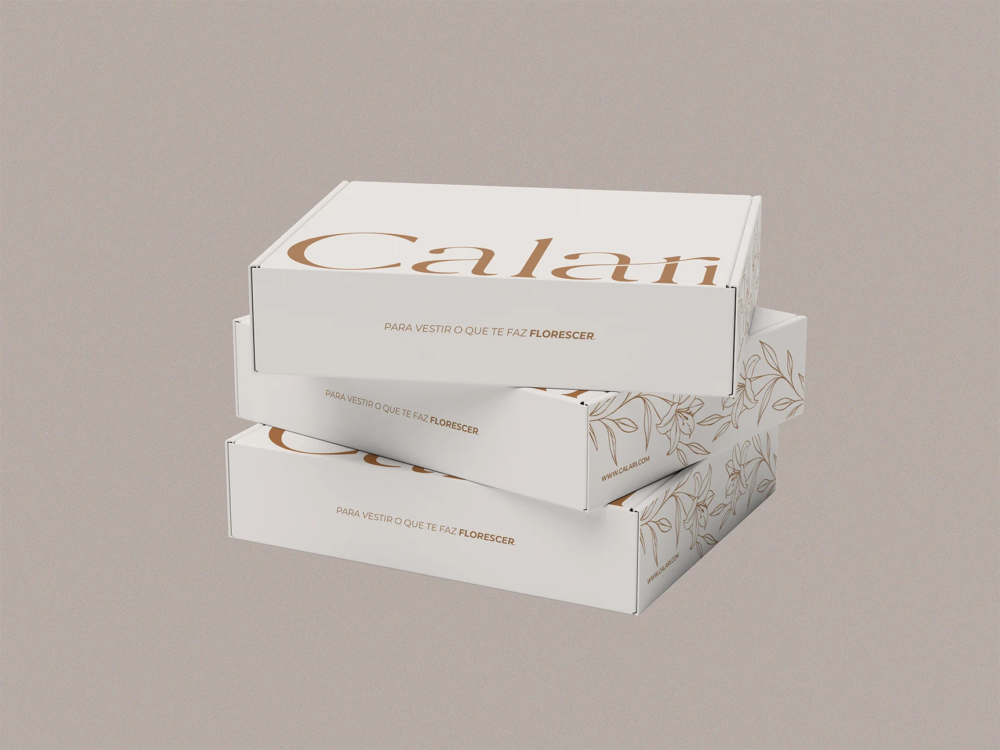
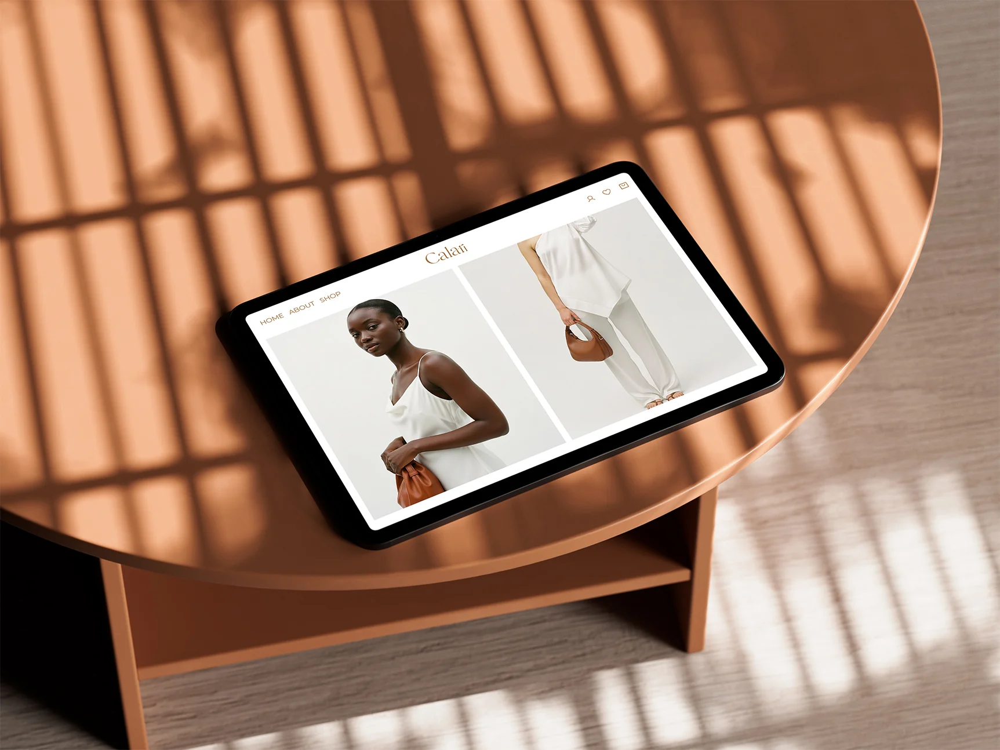
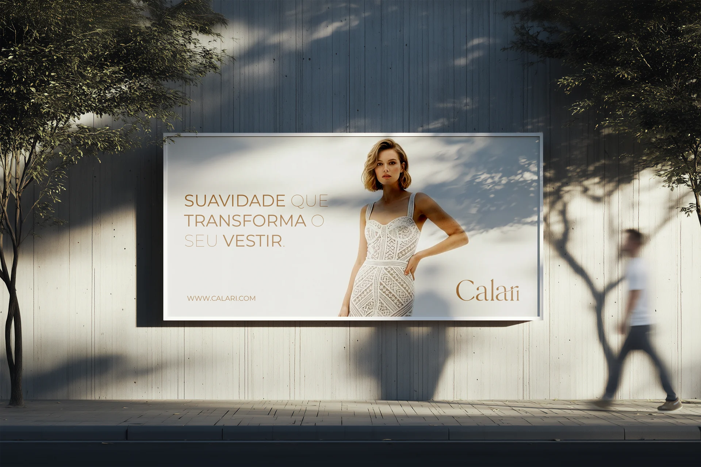

Calari.
A beleza da calma.
A liberdade de ser você.

Leveza para vestir.
Cuidado para acolher.
A Calari nasceu do desejo de encontrar roupas que reunissem leveza, feminilidade e elegância. Uma curadoria de peças modernas e confortáveis, pensada para mulheres que querem se reconhecer no que vestem e sentir segurança nas próprias escolhas.
A identidade visual traduz esse olhar próximo e sensível. Cada elemento ajuda a construir uma marca acolhedora, que valoriza a autenticidade e faz da delicadeza uma presença no cotidiano.

Uma identidade que
deixa a essência florescer.
A calma orienta o universo visual da Calari. Fundos claros, tons terrosos e composições com espaço de respiro acompanham uma proposta de beleza natural, confortável e sem excessos.
O desenho floral amplia essa linguagem: aparece como elemento isolado e como estampa, levando a ideia de florescer aos materiais da marca. O repertório conecta a suavidade das imagens ao cuidado presente na curadoria e no atendimento.



Traços delicados.
Uma presença própria.
A assinatura serifada combina contraste e curvas suaves. O monograma oferece uma versão compacta da identidade, enquanto o desenho floral cria possibilidades de composição para embalagens, impressos e comunicação digital.
A paleta reúne off-white, bege, caramelo e marrom profundo. As tipografias Noto Serif Display, Montserrat e Arial Nova complementam o sistema, equilibrando expressão e clareza nos diferentes materiais.

O cuidado também
está nos detalhes.
Nas caixas e sacolas, a assinatura e a estampa floral transformam a embalagem em parte da experiência da marca. O contraste suave entre as cores mantém a unidade visual e valoriza os detalhes de cada aplicação.
Os mockups apresentam esse universo em materiais impressos, embalagens e formatos digitais. Uma linguagem que acompanha a cliente desde o primeiro contato até o momento de receber a peça escolhida.


